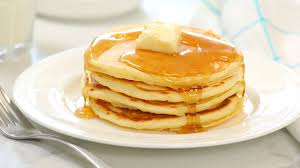

Good Old-Fashioned Pancakes
Servings: 4 | Prep Time: 5 min | Cook Time: 10 min
Breakfast
American
Quick & Easy
Ingredients
- 1 1/2 cups all-purpose flour
- 3 1/2 tsp baking powder
- 1 tsp salt
- 1 tbsp white sugar
- 1 1/4 cups milk
- 1 egg
- 3 tbsp butter, melted
- 1 tsp vanilla extract
Instructions
- In a large bowl, whisk together the flour, baking powder, salt, and sugar.
- Make a well in the center, then pour in the milk, egg, melted butter, and vanilla. Stir until smooth.
- Heat a lightly oiled griddle or frying pan over medium-high heat.
- Pour 1/4 cup of batter onto the griddle for each pancake.
- Cook until bubbles form on the surface of the pancake, then flip and cook the other side until golden brown.
- Serve hot with syrup or toppings of choice.
Nutrition Facts (per serving)
- Calories: 158
- Total Fat: 6g (8% DV)
- Saturated Fat: 3g (17% DV)
- Cholesterol: 38mg (13% DV)
- Sodium: 504mg (22% DV)
- Carbohydrates: 22g (8% DV)
- Fiber: 1g (2% DV)
- Sugars: 4g
- Protein: 5g (9% DV)
- Vitamin C: 0mg (0% DV)
- Calcium: 140mg (11% DV)
- Iron: 1mg (8% DV)
- Potassium: 92mg